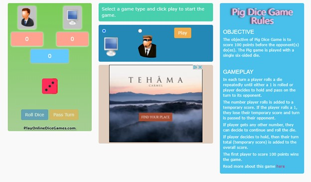
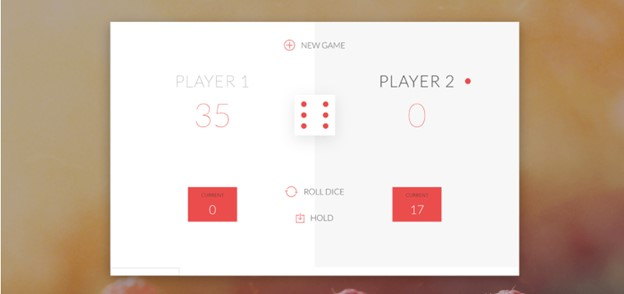

Project Summary
My final project will be based on the studio 3, and it will be a personalized version of pig’s game that has animation about the gaming process.
My final project will be based on the studio 3, and it will be a personalized version of pig’s game that has animation about the gaming process.
This website allows user to play pigs game online. The rule is different from mine, but the roll and skip functions are nearly the same. It also has two players, and one of the players can be the computer that automatically roll the dice. This website contains too many advertisements and the screen for playing is extremely small, so I don’t think it’s a good website overall. However, the images that indicate different users are interesting. In my own project, I can draw some simple images that can be selected by two players as their game character, and they can also choose their favorite color as their theme colors.
I also want to make a pig dice game based on the code that learn from the class. Also, I want to learn from the project 1 that using images to show the players’ character. The design in comparison project 2 is very inspiring. I may also make several buttons that realizing the different functions of the game. However, I want to make the button menu hidden when the players do not want to see it. I also want to make an animation to show the game process of each players, which can show how far they go more directly and visually.
In my design planning, all design elements should be representable as simple geometric shapes. There should be no more than three main colors used, which include the theme color chosen by the two players and the gray used in other parts. Red will be used as a warning and will not appear heavily in the design. The webpage is divided into three main parts, the top part is a drop-down menu, the middle part contains triangles (pyramid) representing the progress of the game, and the bottom part has the players’ information, roll and pass buttons, and the result of the dice roll.
This is a web design example of pigs game that I find on Behance. Although there is no actual website, the user interface that showing in the picture can give me many ideas. The overall style is very clean and only have red as the main color. All the interactable buttons are shown with icons and descriptions like NEW GAME or HOLD. The background is not completely white, instead, it has a dark background with a white book-like playing area. This is what I can learn from, because normally it is hard for me to think about the background other than pure white.
Before the game starts, players are able to see the rules of the game while they need to enter their name and choose the color. Once the game starts, the menu will be displayed when the player clicks on the inverted triangle at the top of the page. Roll and pass buttons will only appear on the side of the player who is playing. When a player clicks roll, they will hear the sound of a dice roll. And if they trigger the snake eyes, in addition to the score clearing, the stacked triangles will all fall down and disappear off the screen.
I thought the audience would be happy to see a more obvious progression of the game, so I added a progress bar and a pyramid stack animation to the design. Initially I had the idea of dominoes, so that when a player triggered the snake eyes, all the cards would fall down and visually it would look like the score they had worked so hard to get became 0. But in practice I found that the difference between the two players was more visible when the "score" was stacked higher.